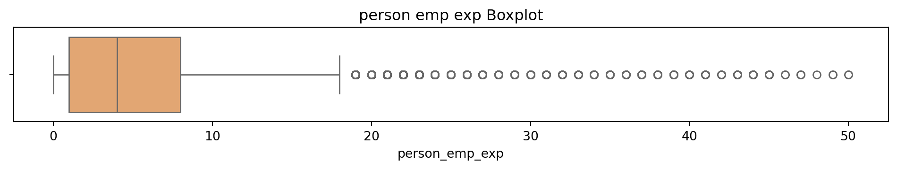

# Removing duplicate rowsloans_df.drop_duplicates(inplace=True)# Check if there are any duplicates leftduplicate_count = loans_df.duplicated().sum()# Display final checkif duplicate_count ==0:print("No duplicate values in the dataset.")else:print(f"Total duplicate values remaining: {duplicate_count}")
No duplicate values in the dataset.
# Looking at the data description see the statistics of numeric columnsloans_df.describe().T
count
mean
std
min
25%
50%
75%
max
person_age
45000.0
27.764178
6.045108
20.00
24.00
26.00
30.00
144.00
person_income
45000.0
80319.053222
80422.498632
8000.00
47204.00
67048.00
95789.25
7200766.00
person_emp_exp
45000.0
5.410333
6.063532
0.00
1.00
4.00
8.00
125.00
loan_amnt
45000.0
9583.157556
6314.886691
500.00
5000.00
8000.00
12237.25
35000.00
loan_int_rate
45000.0
11.006606
2.978808
5.42
8.59
11.01
12.99
20.00
loan_percent_income
45000.0
0.139725
0.087212
0.00
0.07
0.12
0.19
0.66
cb_person_cred_hist_length
45000.0
5.867489
3.879702
2.00
3.00
4.00
8.00
30.00
credit_score
45000.0
632.608756
50.435865
390.00
601.00
640.00
670.00
850.00
loan_status
45000.0
0.222222
0.415744
0.00
0.00
0.00
0.00
1.00
# Youssef Elbadry Accessed: 9th April 2025# Seeing which columns are Categorical and Numericalcat_cols = [var for var in loans_df.columns if loans_df[var].dtypes =='object']num_cols = [var for var in loans_df.columns if loans_df[var].dtypes !='object']print(f'Categorical columns: {cat_cols}')print(f'Numerical columns: {num_cols}')
'''Article saying most lenders will not lend to anyone above 70https://www.moneysupermarket.com/loans/loans-for-pensioners/#:~:text=Most%20lenders%20have%20a%20maximum,beyond%20this%20age%20is%20rare.'''loans_df = loans_df[loans_df['person_age']<=70]print('Ages above 70 removed!')
# Sulani Ishara Accessed: 14th April 2025numerical_columns = ['person_age', 'person_income', 'person_emp_exp', 'loan_amnt', 'loan_int_rate', 'loan_percent_income', 'cb_person_cred_hist_length', 'credit_score']fig, axes = plt.subplots(4, 2, figsize=(16, 20))fig.suptitle('Numerical Features vs Loan Status (Density Plots)', fontsize=16)for i, col inenumerate(numerical_columns): sns.kdeplot(data=loans_df, x=col, hue='loan_status', ax=axes[i//2, i%2], fill=True, common_norm=False, palette='muted') axes[i//2, i%2].set_title(f'{col} vs Loan Status') axes[i//2, i%2].set_xlabel(col) axes[i//2, i%2].set_ylabel('Density')fig.delaxes(axes[3, 1])plt.tight_layout(rect=[0, 0, 1, 0.95])plt.show()
# Box and Whisker plot to see what the outliers in the dataset look like# Sulani Ishara Accessed: 14th April 2025# Function to perform univariate analysis for numeric columnsdef univariate_analysis(data, column, title): plt.figure(figsize=(10, 2)) sns.boxplot(x=data[column], color='sandybrown') plt.title(f'{title} Boxplot') plt.tight_layout() plt.show()print(f'\nSummary Statistics for {title}:\n', data[column].describe())columns_to_analyse = ['person_age', 'person_income', 'person_emp_exp', 'loan_amnt', 'loan_int_rate', 'loan_percent_income', 'cb_person_cred_hist_length', 'credit_score']for column in columns_to_analyse: univariate_analysis(loans_df, column, column.replace('_', ' '))
Summary Statistics for person age:
count 44985.000000
mean 27.739335
std 5.870099
min 20.000000
25% 24.000000
50% 26.000000
75% 30.000000
max 70.000000
Name: person_age, dtype: float64
Summary Statistics for person income:
count 4.498500e+04
mean 7.991017e+04
std 6.332666e+04
min 8.000000e+03
25% 4.719200e+04
50% 6.704600e+04
75% 9.578200e+04
max 2.448661e+06
Name: person_income, dtype: float64

Summary Statistics for person emp exp:
count 44985.000000
mean 5.385351
std 5.886303
min 0.000000
25% 1.000000
50% 4.000000
75% 8.000000
max 50.000000
Name: person_emp_exp, dtype: float64
Summary Statistics for loan amnt:
count 44985.000000
mean 9583.638368
std 6315.056351
min 500.000000
25% 5000.000000
50% 8000.000000
75% 12238.000000
max 35000.000000
Name: loan_amnt, dtype: float64
Summary Statistics for loan int rate:
count 44985.000000
mean 11.006678
std 2.979087
min 5.420000
25% 8.590000
50% 11.010000
75% 12.990000
max 20.000000
Name: loan_int_rate, dtype: float64
Summary Statistics for loan percent income:
count 44985.000000
mean 0.139743
std 0.087210
min 0.000000
25% 0.070000
50% 0.120000
75% 0.190000
max 0.660000
Name: loan_percent_income, dtype: float64
Summary Statistics for cb person cred hist length:
count 44985.000000
mean 5.863177
std 3.869127
min 2.000000
25% 3.000000
50% 4.000000
75% 8.000000
max 30.000000
Name: cb_person_cred_hist_length, dtype: float64
Summary Statistics for credit score:
count 44985.000000
mean 632.569123
std 50.388810
min 390.000000
25% 601.000000
50% 640.000000
75% 670.000000
max 784.000000
Name: credit_score, dtype: float64
from sklearn.preprocessing import RobustScalerfrom scipy.stats.mstats import winsorizefor col in ["person_age", "person_income", "person_emp_exp", "loan_amnt"]: loans_df[col] = winsorize(loans_df[col], limits=[0.025, 0.025])# Robust scalingscaler = RobustScaler()loans_df[["person_age", "person_income", "person_emp_exp", "loan_amnt"]] = scaler.fit_transform(loans_df[["person_age", "person_income", "person_emp_exp", "loan_amnt"]])# Box and Whisker plot to see what the outliers in the dataset look like# Function to perform univariate analysis for numeric columnsfor column in columns_to_analyse: univariate_analysis(loans_df, column, column.replace('_', ' '))
/var/folders/h5/p6vdg3ps6wn1kgd_w454mf500000gn/T/ipykernel_77972/4078407632.py:5: SettingWithCopyWarning:
A value is trying to be set on a copy of a slice from a DataFrame.
Try using .loc[row_indexer,col_indexer] = value instead
See the caveats in the documentation: https://pandas.pydata.org/pandas-docs/stable/user_guide/indexing.html#returning-a-view-versus-a-copy
/var/folders/h5/p6vdg3ps6wn1kgd_w454mf500000gn/T/ipykernel_77972/4078407632.py:8: SettingWithCopyWarning:
A value is trying to be set on a copy of a slice from a DataFrame.
Try using .loc[row_indexer,col_indexer] = value instead
See the caveats in the documentation: https://pandas.pydata.org/pandas-docs/stable/user_guide/indexing.html#returning-a-view-versus-a-copy
Summary Statistics for person age:
count 44985.000000
mean 0.265374
std 0.886138
min -0.833333
25% -0.333333
50% 0.000000
75% 0.666667
max 2.833333
Name: person_age, dtype: float64
Summary Statistics for person income:
count 44985.000000
mean 0.207182
std 0.854803
min -0.910846
25% -0.408603
50% 0.000000
75% 0.591397
max 2.888352
Name: person_income, dtype: float64
Summary Statistics for person emp exp:
count 44985.000000
mean 0.177688
std 0.763888
min -0.571429
25% -0.428571
50% 0.000000
75% 0.571429
max 2.428571
Name: person_emp_exp, dtype: float64
Summary Statistics for loan amnt:
count 44985.000000
mean 0.207831
std 0.833624
min -0.898038
25% -0.414479
50% 0.000000
75% 0.585521
max 2.348715
Name: loan_amnt, dtype: float64
Summary Statistics for loan int rate:
count 44985.000000
mean 11.006678
std 2.979087
min 5.420000
25% 8.590000
50% 11.010000
75% 12.990000
max 20.000000
Name: loan_int_rate, dtype: float64
Summary Statistics for loan percent income:
count 44985.000000
mean 0.139743
std 0.087210
min 0.000000
25% 0.070000
50% 0.120000
75% 0.190000
max 0.660000
Name: loan_percent_income, dtype: float64
Summary Statistics for cb person cred hist length:
count 44985.000000
mean 5.863177
std 3.869127
min 2.000000
25% 3.000000
50% 4.000000
75% 8.000000
max 30.000000
Name: cb_person_cred_hist_length, dtype: float64
Summary Statistics for credit score:
count 44985.000000
mean 632.569123
std 50.388810
min 390.000000
25% 601.000000
50% 640.000000
75% 670.000000
max 784.000000
Name: credit_score, dtype: float64
columns_to_check = ["person_age", "person_income", "person_emp_exp", "loan_amnt"]for col in columns_to_check: skew_val = loans_df[col].skew()print(f"{col} skewness: {skew_val:.2f}")
# Apply log1p directly — it's safe for 0sfor col in columns_to_check: loans_df[col] = np.log1p(loans_df[col])# Recheck skewnessfor col in columns_to_check: skew_val = loans_df[col].skew()print(f"{col} skewness after log1p: {skew_val:.2f}")for column in columns_to_analyse: univariate_analysis(loans_df, column, column.replace('_', ' '))
person_age skewness after log1p: -0.22
person_income skewness after log1p: -0.72
person_emp_exp skewness after log1p: 0.22
loan_amnt skewness after log1p: -0.67
/var/folders/h5/p6vdg3ps6wn1kgd_w454mf500000gn/T/ipykernel_77972/4222552184.py:3: SettingWithCopyWarning:
A value is trying to be set on a copy of a slice from a DataFrame.
Try using .loc[row_indexer,col_indexer] = value instead
See the caveats in the documentation: https://pandas.pydata.org/pandas-docs/stable/user_guide/indexing.html#returning-a-view-versus-a-copy
Summary Statistics for person age:
count 44985.000000
mean -0.010294
std 0.726477
min -1.791759
25% -0.405465
50% 0.000000
75% 0.510826
max 1.343735
Name: person_age, dtype: float64
Summary Statistics for person income:
count 44985.000000
mean -0.084973
std 0.806123
min -2.417388
25% -0.525267
50% 0.000000
75% 0.464613
max 1.357985
Name: person_income, dtype: float64
Summary Statistics for person emp exp:
count 44985.000000
mean -0.028691
std 0.616124
min -0.847298
25% -0.559616
50% 0.000000
75% 0.451985
max 1.232144
Name: person_emp_exp, dtype: float64
Summary Statistics for loan amnt:
count 44985.000000
mean -0.089653
std 0.816802
min -2.283156
25% -0.535253
50% 0.000000
75% 0.460913
max 1.208577
Name: loan_amnt, dtype: float64
Summary Statistics for loan int rate:
count 44985.000000
mean 11.006678
std 2.979087
min 5.420000
25% 8.590000
50% 11.010000
75% 12.990000
max 20.000000
Name: loan_int_rate, dtype: float64
Summary Statistics for loan percent income:
count 44985.000000
mean 0.139743
std 0.087210
min 0.000000
25% 0.070000
50% 0.120000
75% 0.190000
max 0.660000
Name: loan_percent_income, dtype: float64
Summary Statistics for cb person cred hist length:
count 44985.000000
mean 5.863177
std 3.869127
min 2.000000
25% 3.000000
50% 4.000000
75% 8.000000
max 30.000000
Name: cb_person_cred_hist_length, dtype: float64
Summary Statistics for credit score:
count 44985.000000
mean 632.569123
std 50.388810
min 390.000000
25% 601.000000
50% 640.000000
75% 670.000000
max 784.000000
Name: credit_score, dtype: float64
loans_dfloans_df.describe().T
count
mean
std
min
25%
50%
75%
max
person_age
44985.0
-0.010294
0.726477
-1.791759
-0.405465
0.00
0.510826
1.343735
person_income
44985.0
-0.084973
0.806123
-2.417388
-0.525267
0.00
0.464613
1.357985
person_emp_exp
44985.0
-0.028691
0.616124
-0.847298
-0.559616
0.00
0.451985
1.232144
loan_amnt
44985.0
-0.089653
0.816802
-2.283156
-0.535253
0.00
0.460913
1.208577
loan_int_rate
44985.0
11.006678
2.979087
5.420000
8.590000
11.01
12.990000
20.000000
loan_percent_income
44985.0
0.139743
0.087210
0.000000
0.070000
0.12
0.190000
0.660000
cb_person_cred_hist_length
44985.0
5.863177
3.869127
2.000000
3.000000
4.00
8.000000
30.000000
credit_score
44985.0
632.569123
50.388810
390.000000
601.000000
640.00
670.000000
784.000000
loan_status
44985.0
0.222296
0.415794
0.000000
0.000000
0.00
0.000000
1.000000
# Sulani Ishara Accessed: 14th April 2025numerical_columns = ['person_age', 'person_income', 'person_emp_exp', 'loan_amnt', 'loan_int_rate', 'loan_percent_income', 'cb_person_cred_hist_length', 'credit_score']fig, axes = plt.subplots(4, 2, figsize=(16, 20))fig.suptitle('Numerical Features vs Loan Status (Density Plots)', fontsize=16)for i, col inenumerate(numerical_columns): sns.kdeplot(data=loans_df, x=col, hue='loan_status', ax=axes[i//2, i%2], fill=True, common_norm=False, palette='muted') axes[i//2, i%2].set_title(f'{col} vs Loan Status') axes[i//2, i%2].set_xlabel(col) axes[i//2, i%2].set_ylabel('Density')fig.delaxes(axes[3, 1])plt.tight_layout(rect=[0, 0, 1, 0.95])plt.show()
# Making Education into a non-categorical columnsloans_df['person_education'] = loans_df['person_education'].replace({'High School': 0,'Associate': 1,'Bachelor': 2,'Master': 3,'Doctorate': 4})
/var/folders/h5/p6vdg3ps6wn1kgd_w454mf500000gn/T/ipykernel_77972/1636345205.py:2: FutureWarning:
Downcasting behavior in `replace` is deprecated and will be removed in a future version. To retain the old behavior, explicitly call `result.infer_objects(copy=False)`. To opt-in to the future behavior, set `pd.set_option('future.no_silent_downcasting', True)`
/var/folders/h5/p6vdg3ps6wn1kgd_w454mf500000gn/T/ipykernel_77972/1636345205.py:2: SettingWithCopyWarning:
A value is trying to be set on a copy of a slice from a DataFrame.
Try using .loc[row_indexer,col_indexer] = value instead
See the caveats in the documentation: https://pandas.pydata.org/pandas-docs/stable/user_guide/indexing.html#returning-a-view-versus-a-copy
loans_df
person_age
person_gender
person_education
person_income
person_emp_exp
person_home_ownership
loan_amnt
loan_intent
loan_int_rate
loan_percent_income
cb_person_cred_hist_length
credit_score
previous_loan_defaults_on_file
loan_status
0
-1.098612
female
3
0.096114
-0.847298
RENT
1.208577
PERSONAL
16.02
0.49
3.0
561
No
1
1
-1.791759
female
0
-2.417388
-0.847298
OWN
-2.283156
EDUCATION
11.14
0.08
2.0
504
Yes
0
2
-0.182322
female
0
-2.417388
-0.154151
MORTGAGE
-0.423730
MEDICAL
12.87
0.44
3.0
635
No
1
3
-0.693147
female
2
0.232313
-0.847298
RENT
1.208577
MEDICAL
15.23
0.44
2.0
675
No
1
4
-0.405465
male
3
-0.018927
-0.559616
RENT
1.208577
MEDICAL
14.27
0.53
4.0
586
No
1
...
...
...
...
...
...
...
...
...
...
...
...
...
...
...
44995
0.154151
male
1
-0.498519
0.251314
RENT
0.676570
MEDICAL
15.66
0.31
3.0
645
No
1
44996
1.041454
female
1
-0.025978
1.049822
RENT
0.129413
HOMEIMPROVEMENT
14.07
0.14
11.0
621
No
1
44997
0.773190
male
1
-0.233123
0.356675
RENT
-1.281708
DEBTCONSOLIDATION
10.02
0.05
10.0
668
No
1
44998
0.405465
male
2
-1.195026
0.000000
RENT
0.439956
EDUCATION
13.23
0.36
6.0
604
No
1
44999
-0.405465
male
0
-0.382285
-0.559616
RENT
-0.203884
DEBTCONSOLIDATION
17.05
0.13
3.0
628
No
1
44985 rows × 14 columns
# One-hot coding for dummy variablesloans_df = pd.get_dummies(loans_df, columns = ['person_gender', 'person_home_ownership', 'loan_intent', 'previous_loan_defaults_on_file'], drop_first =True)# Checking the data typesloans_df.dtypes
# Define numerical columns with targetnumerical_columns_with_target = ['person_age', 'person_income', 'person_emp_exp', 'loan_amnt', 'loan_int_rate', 'loan_percent_income', 'cb_person_cred_hist_length', 'credit_score']# Create pairplot of numerical features with loan_status as huesns.pairplot(loans_df[numerical_columns_with_target + ['loan_status']], hue='loan_status', palette='muted' )plt.show()
# Getting a correlation matrixnum_loans_df = loans_df.select_dtypes(include=['number']) # Include only numerical data types# Correlation of that datacorr_matrix = num_loans_df.corr()print(corr_matrix)
Average Accuracy: 0.8994
Precision: 0.7804
Recall: 0.7570
F1-Score: 0.7685
lr_cm = confusion_matrix(y_test, predictions_lr )print(lr_cm)# Define new labels: index 0 -> "Denied", index 1 -> "Approved"labels = ['Denied', 'Approved']# Plot the confusion matrix heatmap with the renamed labelsplt.figure(figsize=(8, 6))sns.heatmap(lr_cm, annot=True, fmt="d", cmap="Blues", cbar=False, xticklabels=["Predicted Denied", "Predicted Approved"], yticklabels=["Actual Denied", "Actual Approved"])plt.xlabel("Predicted Label", fontsize=12)plt.ylabel("True Label", fontsize=12)plt.title("Confusion Matrix (Logistic Regression)", fontsize=14)plt.show()
[[3285 213]
[ 243 757]]
# Calculating the AUC-ROC | from one of the tutorialslr_y_prob = reg_model_lr.predict_proba(X_test)[:, 1]lr_auc_roc = roc_auc_score(y_test, lr_y_prob)print(f"AUC-ROC: {lr_auc_roc:.4f}")
AUC-ROC: 0.9552
# Calculating the AUC-ROC | from one of the tutorialslr2_y_prob = reg_model_lr2.predict_proba(X_test)[:, 1]lr2_auc_roc = roc_auc_score(y_test, lr2_y_prob)print(f"AUC-ROC: {lr2_auc_roc:.4f}")
AUC-ROC: 0.9552
# From ChatGPT# Get false positive rate, true positive rate and thresholdsfpr, tpr, thresholds = roc_curve(y_test, lr_y_prob)# Plot the ROC curveplt.figure(figsize=(8, 6))plt.plot(fpr, tpr, label=f'AUC = {lr_auc_roc:.4f}')plt.plot([0, 1], [0, 1], linestyle='--', color='gray') # Diagonal line for random classifierplt.xlabel('False Positive Rate')plt.ylabel('True Positive Rate')plt.title('Receiver Operating Characteristic (ROC) Curve (Logistic Regression)')plt.legend(loc='lower right')plt.grid(True)plt.tight_layout()plt.show()
# Setting Up 10-Fold Stratified Cross-Validationskf = StratifiedKFold(n_splits=10, shuffle=True, random_state=42)dt_accuracy_scores = []# Loop through each foldfor fold, (train_index, test_index) inenumerate(skf.split(X, y), 1): X_resampled, X_test = X.iloc[train_index], X.iloc[test_index] y_resampled, y_test = y.iloc[train_index], y.iloc[test_index]# --- Model Training --- dt_model = DecisionTreeClassifier(random_state=42) dt_model.fit(X_resampled, y_resampled)# Evaluate the model on the test data dt_accuracy = dt_model.score(X_test, y_test) dt_accuracy_scores.append(dt_accuracy)print(f"Fold {fold} Accuracy: {dt_accuracy:.4f}")print(f"Average Accuracy: {sum(dt_accuracy_scores)/len(dt_accuracy_scores):.4f}")
Average Accuracy: 0.9017
Precision: 0.7677
Recall: 0.7800
F1-Score: 0.7738
dt_cm = confusion_matrix(y_test, predictions_dt )print(dt_cm)# Define new labels: index 0 -> "Denied", index 1 -> "Approved"labels = ['Denied', 'Approved']# Plot the confusion matrix heatmap with the renamed labelsplt.figure(figsize=(8, 6))sns.heatmap(dt_cm, annot=True, fmt="d", cmap="Blues", cbar=False, xticklabels=["Predicted Denied", "Predicted Approved"], yticklabels=["Actual Denied", "Actual Approved"])plt.xlabel("Predicted Label", fontsize=12)plt.ylabel("True Label", fontsize=12)plt.title("Confusion Matrix (Decision Tree)", fontsize=14)plt.show()
[[3262 236]
[ 220 780]]
# Calculating the AUC-ROC | from one of the tutorialsdt_y_prob = dt_model.predict_proba(X_test)[:, 1]dt_auc_roc = roc_auc_score(y_test, dt_y_prob)print(f"AUC-ROC: {dt_auc_roc:.4f}")
AUC-ROC: 0.8563
# From ChatGPT# Get false positive rate, true positive rate and thresholdsfpr, tpr, thresholds = roc_curve(y_test, dt_y_prob)# Plot the ROC curveplt.figure(figsize=(8, 6))plt.plot(fpr, tpr, label=f'AUC = {dt_auc_roc:.4f}')plt.plot([0, 1], [0, 1], linestyle='--', color='gray') # Diagonal line for random classifierplt.xlabel('False Positive Rate')plt.ylabel('True Positive Rate')plt.title('Receiver Operating Characteristic (ROC) Curve (Decsision Tree)')plt.legend(loc='lower right')plt.grid(True)plt.tight_layout()plt.show()
# Setting Up 10-Fold Stratified Cross-Validationskf = StratifiedKFold(n_splits=10, shuffle=True, random_state=42)rf_accuracy_scores = []# Loop through each foldfor fold, (train_index, test_index) inenumerate(skf.split(X, y), 1): X_resampled, X_test = X.iloc[train_index], X.iloc[test_index] y_resampled, y_test = y.iloc[train_index], y.iloc[test_index]# --- Model Training --- rf_model = RandomForestClassifier(n_estimators=100, random_state=42) rf_model.fit(X_resampled, y_resampled)# Evaluate the model on the test data rf_accuracy = rf_model.score(X_test, y_test) rf_accuracy_scores.append(rf_accuracy)print(f"Fold {fold} Accuracy: {rf_accuracy:.4f}")print(f"Average Accuracy: {sum(rf_accuracy_scores)/len(rf_accuracy_scores):.4f}")
Average Accuracy: 0.9214
Precision: 0.9218
Recall: 0.7190
F1-Score: 0.8079
rf_cm = confusion_matrix(y_test, predictions_rf)print(rf_cm)# Define new labels: index 0 -> "Denied", index 1 -> "Approved"labels = ['Denied', 'Approved']# Plot the confusion matrix heatmap with the renamed labelsplt.figure(figsize=(8, 6))sns.heatmap(rf_cm, annot=True, fmt="d", cmap="Blues", cbar=False, xticklabels=["Predicted Denied", "Predicted Approved"], yticklabels=["Actual Denied", "Actual Approved"])plt.xlabel("Predicted Label", fontsize=12)plt.ylabel("True Label", fontsize=12)plt.title("Confusion Matrix (Random Forest (Untuned))", fontsize=14)plt.show()
[[3410 88]
[ 232 768]]
rf2_cm = confusion_matrix(y_test, predictions_rf2)print(rf2_cm)# Define new labels: index 0 -> "Denied", index 1 -> "Approved"labels = ['Denied', 'Approved']# Plot the confusion matrix heatmap with the renamed labelsplt.figure(figsize=(8, 6))sns.heatmap(rf2_cm, annot=True, fmt="d", cmap="Blues", cbar=False, xticklabels=["Predicted Denied", "Predicted Approved"], yticklabels=["Actual Denied", "Actual Approved"])plt.xlabel("Predicted Label", fontsize=12)plt.ylabel("True Label", fontsize=12)plt.title("Confusion Matrix (Random Forest (Tuned v1))", fontsize=14)plt.show()
[[3433 65]
[ 277 723]]
rf3_cm = confusion_matrix(y_test, predictions_rf2)print(rf3_cm)# Define new labels: index 0 -> "Denied", index 1 -> "Approved"labels = ['Denied', 'Approved']# Plot the confusion matrix heatmap with the renamed labelsplt.figure(figsize=(8, 6))sns.heatmap(rf3_cm, annot=True, fmt="d", cmap="Blues", cbar=False, xticklabels=["Predicted Denied", "Predicted Approved"], yticklabels=["Actual Denied", "Actual Approved"])plt.xlabel("Predicted Label", fontsize=12)plt.ylabel("True Label", fontsize=12)plt.title("Confusion Matrix (Random Forest (Tuned v2))", fontsize=14)plt.show()
[[3433 65]
[ 277 723]]
# Calculating the AUC-ROC | from one of the tutorialsrf_y_prob = rf_model.predict_proba(X_test)[:, 1]rf_auc_roc = roc_auc_score(y_test, rf_y_prob)print(f"AUC-ROC: {rf_auc_roc:.4f}")
AUC-ROC: 0.9747
# Calculating the AUC-ROC | from one of the tutorialsrf2_y_prob = rf2_model.predict_proba(X_test)[:, 1]rf2_auc_roc = roc_auc_score(y_test, rf2_y_prob)print(f"AUC-ROC: {rf2_auc_roc:.4f}")
AUC-ROC: 0.9683
# Calculating the AUC-ROC | from one of the tutorialsrf3_y_prob = rf3_model.predict_proba(X_test)[:, 1]rf3_auc_roc = roc_auc_score(y_test, rf3_y_prob)print(f"AUC-ROC: {rf3_auc_roc:.4f}")
AUC-ROC: 0.9684
# From ChatGPT# Get false positive rate, true positive rate and thresholdsfpr, tpr, thresholds = roc_curve(y_test, rf_y_prob)# Plot the ROC curveplt.figure(figsize=(8, 6))plt.plot(fpr, tpr, label=f'AUC = {rf_auc_roc:.4f}')plt.plot([0, 1], [0, 1], linestyle='--', color='gray') # Diagonal line for random classifierplt.xlabel('False Positive Rate')plt.ylabel('True Positive Rate')plt.title('Receiver Operating Characteristic (ROC) Curve (Random Forest (Untuned))')plt.legend(loc='lower right')plt.grid(True)plt.tight_layout()plt.show()
# Dictionary of model names and predicted probabilitiesmodels_probs = {"Random Forest(Untuned)": rf_y_prob,"Random Forest(Tuned v1)": rf2_y_prob,"Random Forest(Tuned v2)": rf3_y_prob}plt.figure(figsize=(10, 8))# Plot each ROC curvefor name, probs in models_probs.items(): fpr, tpr, _ = roc_curve(y_test, probs) roc_auc = auc(fpr, tpr) plt.plot(fpr, tpr, label=f'{name} (AUC = {roc_auc:.5f})')# Plot random guess lineplt.plot([0, 1], [0, 1], linestyle='--', color='gray')plt.xlabel('False Positive Rate')plt.ylabel('True Positive Rate')plt.title('ROC Curve Comparison of Models (Random Forest)')plt.legend(loc='lower right')plt.grid(True)plt.tight_layout()plt.show()
# Setting Up 10-Fold Stratified Cross-Validationskf = StratifiedKFold(n_splits=10, shuffle=True, random_state=42)xgb_accuracy_scores = []# Loop through each foldfor fold, (train_index, test_index) inenumerate(skf.split(X, y), 1): X_resampled, X_test = X.iloc[train_index], X.iloc[test_index] y_resampled, y_test = y.iloc[train_index], y.iloc[test_index]# --- Model Training --- xgb_model = XGBClassifier( n_estimators=100, learning_rate=0.1, eval_metric='logloss', random_state=42 ) xgb_model.fit(X_train, y_train)# Evaluate the model on the test data xgb_accuracy = xgb_model.score(X_test, y_test) xgb_accuracy_scores.append(xgb_accuracy)print(f"Fold {fold} Accuracy: {xgb_accuracy:.4f}")print(f"Average Accuracy: {sum(xgb_accuracy_scores)/len(xgb_accuracy_scores):.4f}")
Average Accuracy: 0.9486
Precision: 0.9332
Recall: 0.8240
F1-Score: 0.8752
xgb_cm = confusion_matrix(y_test, predictions_xgb)print(xgb_cm)# Define new labels: index 0 -> "Denied", index 1 -> "Approved"labels = ['Denied', 'Approved']# Plot the confusion matrix heatmap with the renamed labelsplt.figure(figsize=(8, 6))sns.heatmap(xgb_cm, annot=True, fmt="d", cmap="Blues", cbar=False, xticklabels=["Predicted Denied", "Predicted Approved"], yticklabels=["Actual Denied", "Actual Approved"])plt.xlabel("Predicted Label", fontsize=12)plt.ylabel("True Label", fontsize=12)plt.title("Confusion Matrix (XGBoost (Untuned))", fontsize=14)plt.show()
[[3420 78]
[ 213 787]]
xgb2_cm = confusion_matrix(y_test, predictions_xgb2)print(xgb2_cm)# Define new labels: index 0 -> "Denied", index 1 -> "Approved"labels = ['Denied', 'Approved']# Plot the confusion matrix heatmap with the renamed labelsplt.figure(figsize=(8, 6))sns.heatmap(xgb2_cm, annot=True, fmt="d", cmap="Blues", cbar=False, xticklabels=["Predicted Denied", "Predicted Approved"], yticklabels=["Actual Denied", "Actual Approved"])plt.xlabel("Predicted Label", fontsize=12)plt.ylabel("True Label", fontsize=12)plt.title("Confusion Matrix (XGBoost (Tuned))", fontsize=14)plt.show()
[[3439 59]
[ 176 824]]
# Calculating the AUC-ROC | from one of the tutorialsxgb_y_prob = xgb_model.predict_proba(X_test)[:, 1]xgb_auc_roc = roc_auc_score(y_test, xgb_y_prob)print(f"AUC-ROC: {xgb_auc_roc:.4f}")
AUC-ROC: 0.9810
# Calculating the AUC-ROC | from one of the tutorialsxgb2_y_prob = xgb2_model.predict_proba(X_test)[:, 1]xgb2_auc_roc = roc_auc_score(y_test, xgb2_y_prob)print(f"AUC-ROC: {xgb2_auc_roc:.4f}")
AUC-ROC: 0.9868
# From ChatGPT# Get false positive rate, true positive rate and thresholdsfpr, tpr, thresholds = roc_curve(y_test, xgb_y_prob)# Plot the ROC curveplt.figure(figsize=(8, 6))plt.plot(fpr, tpr, label=f'AUC = {xgb_auc_roc:.4f}')plt.plot([0, 1], [0, 1], linestyle='--', color='gray') # Diagonal line for random classifierplt.xlabel('False Positive Rate')plt.ylabel('True Positive Rate')plt.title('Receiver Operating Characteristic (ROC) Curve (XGBoost (Untuned))')plt.legend(loc='lower right')plt.grid(True)plt.tight_layout()plt.show()
# Dictionary of model names and predicted probabilitiesmodels_probs = {"XGBoost (Tuned)": xgb2_y_prob,"XGBoost (Untuned)": xgb_y_prob,}plt.figure(figsize=(10, 8))# Plot each ROC curvefor name, probs in models_probs.items(): fpr, tpr, _ = roc_curve(y_test, probs) roc_auc = auc(fpr, tpr) plt.plot(fpr, tpr, label=f'{name} (AUC = {roc_auc:.5f})')# Plot random guess lineplt.plot([0, 1], [0, 1], linestyle='--', color='gray')plt.xlabel('False Positive Rate')plt.ylabel('True Positive Rate')plt.title('ROC Curve Comparison of Models (XGBoost)')plt.legend(loc='lower right')plt.grid(True)plt.tight_layout()plt.show()
# Setting Up 10-Fold Stratified Cross-Validationskf = StratifiedKFold(n_splits=10, shuffle=True, random_state=42)knn_accuracy_scores = []# Loop through each foldfor fold, (train_index, test_index) inenumerate(skf.split(X, y), 1): X_resampled, X_test = X.iloc[train_index], X.iloc[test_index] y_resampled, y_test = y.iloc[train_index], y.iloc[test_index]# --- Model Training --- knn_model = KNeighborsClassifier( n_neighbors=2, weights='uniform', algorithm='auto', leaf_size=30, metric='minkowski' ) knn_model.fit(X_train, y_train)# Evaluate the model on the test data knn_accuracy = knn_model.score(X_test, y_test) knn_accuracy_scores.append(knn_accuracy)print(f"Fold {fold} Accuracy: {knn_accuracy:.4f}")print(f"Average Accuracy: {sum(knn_accuracy_scores)/len(knn_accuracy_scores):.4f}")
Average Accuracy: 0.8678
Precision: 0.8947
Recall: 0.4250
F1-Score: 0.5763
knn_cm = confusion_matrix(y_test, predictions_knn)print(knn_cm)# Define new labels: index 0 -> "Denied", index 1 -> "Approved"labels = ['Denied', 'Approved']# Plot the confusion matrix heatmap with the renamed labelsplt.figure(figsize=(8, 6))sns.heatmap(knn_cm, annot=True, fmt="d", cmap="Blues", cbar=False, xticklabels=["Predicted Denied", "Predicted Approved"], yticklabels=["Actual Denied", "Actual Approved"])plt.xlabel("Predicted Label", fontsize=12)plt.ylabel("True Label", fontsize=12)plt.title("Confusion Matrix (KNN)", fontsize=14)plt.show()
[[3448 50]
[ 575 425]]
# Calculating the AUC-ROC | from one of the tutorialsknn_y_prob = knn_model.predict_proba(X_test)[:, 1]knn_auc_roc = roc_auc_score(y_test, knn_y_prob)print(f"AUC-ROC: {knn_auc_roc:.4f}")
AUC-ROC: 0.8882
# Get false positive rate, true positive rate and thresholdsfpr, tpr, thresholds = roc_curve(y_test, knn_y_prob)# Plot the ROC curveplt.figure(figsize=(8, 6))plt.plot(fpr, tpr, label=f'AUC = {knn_auc_roc:.4f}')plt.plot([0, 1], [0, 1], linestyle='--', color='gray') # Diagonal line for random classifierplt.xlabel('False Positive Rate')plt.ylabel('True Positive Rate')plt.title('Receiver Operating Characteristic (ROC) Curve (KNN)')plt.legend(loc='lower right')plt.grid(True)plt.tight_layout()plt.show()